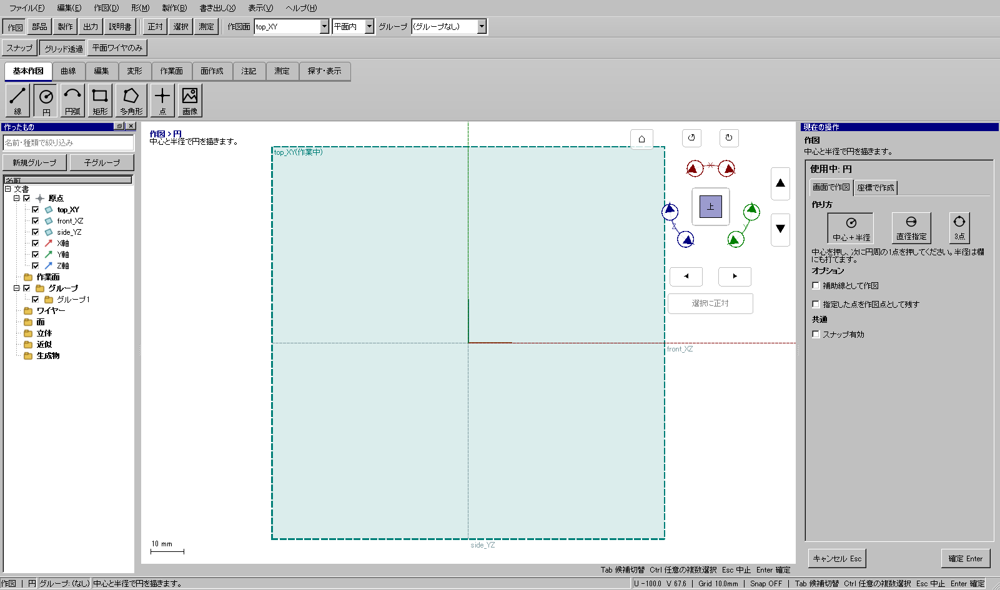

半径5mmのライト輪郭を作る
半径5mmのライト輪郭を作る
使う機能：円
中心と半径、直径指定、3点など作り方を選べます。半径5と直径5では大きさが2倍違うため、欄名を見て入力します。
折れ線でなく円の形式で閉じた輪郭ができる。
1 準備 — 元の図形から作る
top_XYに正対する。
まだ用意できていなければ、次の手順を先に行ってください。既にモデルがある場合も、例の座標・大きさ・面の向きを自分のモデルへ読み替えます。
- 指定座標の直線・円・円弧を準備する — 図形の作成から順に練習できます。
練習前にKCD2を別名保存します。数値の長さはmm、角度は度です。平面内のu/vと世界XYZを区別します。
2 使う道具を開く — 押す場所
- 作図 → 基本作図 → 円
別の入口：Ctrl+K → 円を検索 → 候補の用途を確認して開きます。別モードなら「全モードから探す」をオンにします。

3 操作手順 — 一つずつ進める
1 円を選ぶ
この段階で確認：この操作で使う入力：top_XYに正対する
2 中心と半径の作り方を選ぶ
この段階で確認：使う対象・値：半径5mm（直径10mm）
3 中心(0,0,0)を置き、半径5mmで確定する
この段階で確認：折れ線でなく円の形式で閉じた輪郭ができる。
4 設定する欄と数値
ボタン名・欄名と、今回使う値を対応させてください。項目が出ていない場合は作り方・モードが合っているか確認し、ペイン内をスクロールします。
| 見る欄・役割 | この例の設定と意味 |
|---|---|
| 作り方 | 中心＋半径 |
| 半径 | 5mm |
| 中心 | (0,0) |
選択の確認：役割欄の名前と3Dの強調を照合します。重なって拾いにくい時はTabで候補を替えます。全体を使う例では左一覧の要素名を選び、3Dの1辺選択と区別します。

この実画面は既存操作試験の一場面で、下の数値例の完成画像とは限りません。設定・選択の操作画面。具体的な完成例は段階写真のある作業例を参照してください。
5 確定して結果を確認
最後の点や配置位置を指定した時点で、この1回の操作が完了します。数値欄を入力するEnterと、形を完成させる操作を画面下の案内で区別します。
折れ線でなく円の形式で閉じた輪郭ができる。
形を作る操作では、元と結果の名前を分けて一覧で確認し、必要に応じて元を一時非表示にします。表示だけの機能では形状や要素数を変えることが目的ではありません。
6 取消・やり直し・保存
入力をやめる時はEscを使います。作図で直前の点を戻す場合は、画面の案内に従ってBackspaceを使います。確定後の図面変更はCtrl+Zです。
モデルの編集正本はKCD2、説明書の編集正本はKCIです。外部へ出力するだけの機能では、出力ファイルと編集元を両方残してください。
進めない場合 — 症状から戻る場所を探す
| 起きていること | 確認して直す場所 |
|---|---|
| 円が想定の半分 | 半径欄と直径欄を確認 |
| 円が折れ線に見える | 拡大表示と元要素の種類を確認、見た目だけで判断しない |
この機能の入力条件：中心と半径で円を描きます。
計算中は処理表示を見ます。失敗が出たら、対象・入力条件を変えずに何度も押すのでなく、案内にある対象と条件を確認します。
別の方式・条件で使う
中心＋半径
まず主手順で入力の役割を確認し、この例の値と操作へ置き換えます。
この例の準備：top_XY
中心を置き半径欄へ5を入れて確定します。直径は10mmです。中心の位置が必要なら座標で作成の円を使います。
- 中心(0,0)
- 半径5mm
結果の見分け方：直径10mmの円
この実画面は既存操作試験の一場面で、下の数値例の完成画像とは限りません。方式間で共通の入力欄を確認する参考画面です。この方式・上記の数値で確定した結果の画像ではありません。
直径指定
まず主手順で入力の役割を確認し、この例の値と操作へ置き換えます。
この例の準備：top_XY
直径指定も最初の点は中心です。中心をクリックした後、直径欄へ10を入れEnterします。直径の両端2点を拾う方式ではありません。
- 直径指定
- 中心(0,0)
- 直径欄10mm
- Enter
結果の見分け方：直径10mmの円
この実画面は既存操作試験の一場面で、下の数値例の完成画像とは限りません。方式間で共通の入力欄を確認する参考画面です。この方式・上記の数値で確定した結果の画像ではありません。
3点
まず主手順で入力の役割を確認し、この例の値と操作へ置き換えます。
この例の準備：top_XY
点を左−5,0、上0,5、右5,0の順に置きます。3点が同一直線にならなければ通る円が定まります。3点円弧と違い結果は全周です。
- 3点の作り方
- (-5,0),(0,5),(5,0)
結果の見分け方：3点を通る円
この実画面は既存操作試験の一場面で、下の数値例の完成画像とは限りません。方式間で共通の入力欄を確認する参考画面です。この方式・上記の数値で確定した結果の画像ではありません。
参考画面の出典と確認範囲
試験名：HP-COMMAND 台帳の全コマンドが同じ入口から呼べる。試験全体の結果：passed。画像はコマンド呼出し直後で、入力待ち・下見の場合もあります。各段階の完成証拠ではありません。